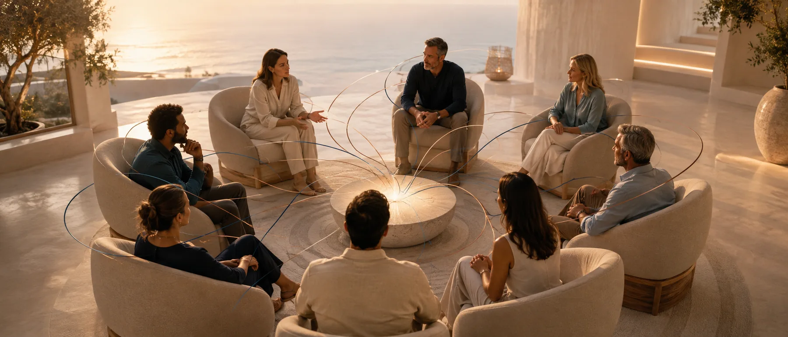

ACCOMPAGNEMENTS
Formations
Développer les compétences et faire évoluer les pratiques professionnelles.
Découvrir formationsDÉVELOPPER LES PERSONNES ET LES ÉQUIPES
Formations, ateliers, coaching, conseil et développement des compétences : choisissez l’approche qui correspond à votre situation.
QUATRE DOMAINES
Chaque domaine ouvre une sélection de propositions concrètes, puis une fiche individuelle détaillée.
Développer les compétences et faire évoluer les pratiques professionnelles.
Découvrir formations
Faire travailler les collectifs sur des situations réelles et passer de l'échange à l'action.
Découvrir ateliers
Prendre du recul, renforcer sa posture et accompagner les évolutions individuelles et collectives.
Découvrir coaching
Structurer un projet et mobiliser des regards experts adaptés aux enjeux humains et organisationnels.
Découvrir conseil & rh